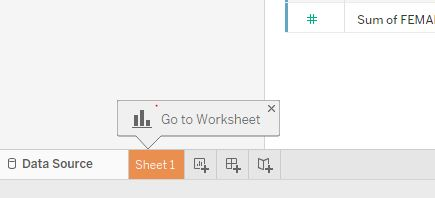
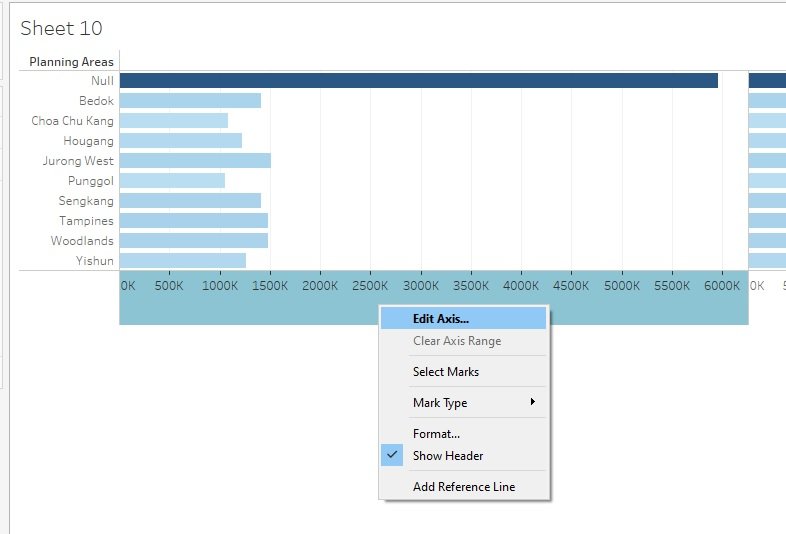
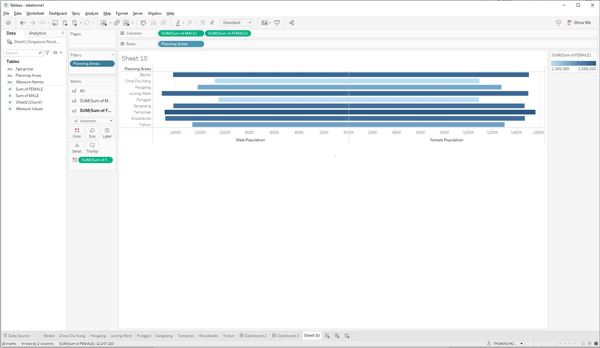
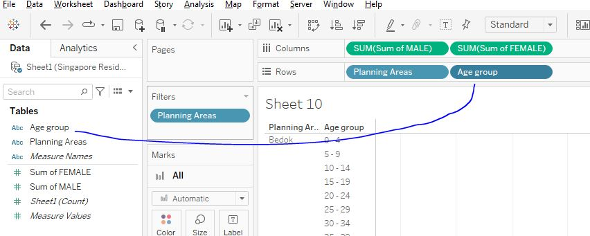
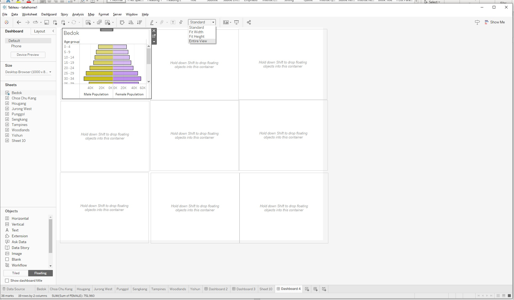
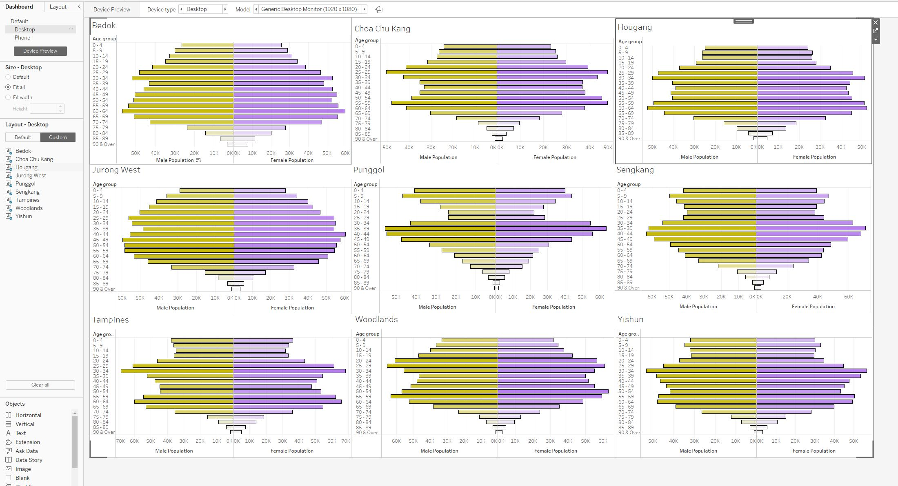

Dashboard Building
Open new Tableau window. Save and name it as your project.
We can drag the xlsx excel data into this Tableau window.
Drag Sheet1 into the middle (this is the final data table above after data transformation from previous steps). We shall take this as our datasource.
Click on Sheet 1 and we will create the first Tableau Sheet

We shall put drag these items to Columns: Sums of MALE , Sums of FEMALE and Rows: Planning Area

Next, right click on one of the Axis and EDIT AXIS

We will tick the Reverse options, as well as rename the axis to “Male Population”

We shall repeat the same for Female side. (but do not tick the Reverse option).
We shall then right click Null value to exclude them from the filter

Finally, we will have a pyramid graph, similar to this

We shall right on the Sheet 1, and duplicate this worksheet 9 times, one for each other areas.
We shall rename each worksheets as per each of the planning areas ( Bedok, Choa Chu Kang, Hougang etc…)
This is already a pyramid graph of Singapore populations for 9 most populous areas, but we still need to break down in term of age group.
We select Bedok sheet
Right click on Filters of Planning Areas > Edit filters

For example, if this is worksheet for Bedok, we can exclude other areas.

Next, we drag Age Group into Rows.

Right click on Age Group > Filter > Exclude Total
We will have a pyramid graph for Bedok population only: Depict populations between Male and Female, with subsets of each age groups for Bedok areas only.

Next is aesthetics, where we have to input colours to make things more distinctive.
The recommendation would be one half (Male) would be warm and light color, while the other half should carry darker and cold color.

We repeat the same steps above for all 9 planning areas. Remember to maintain the same color codes / formats for all 9 areas.
Lastly, we can building Dashboard.
Create new dashboard

We choose Floating as the setting and choose Vertical objects

We divide dashboard into 9 evenly horizontal rectangle containers. Next we drag each of the Sheets into each of these container.

Remember to change Standard to Entire view to see entire graph.
Also click on Device Preview and view as Large Desktop Monitor (2560 x 1440) And click on Size ( default is Fixed) and change to Automatic.
After dragging each planning areas into the container. Remove the labels and ledgers ( Plannings Areas, Sum of Male and Sums of Females.
Play around with the 9 planning areas (alignments of lines and borders, colours etc..)
Final results would look similar to this.

Publishing Dashboard
Finally, we can go to Data / Sheet1 / Extract Data
After data extraction (saving Tableau working as .hyper file), we can go to Server > Tableau Public > Save to Tableau Public.
If you have logged in to your Tableau public account, this will be uploaded as a new Viz under your profile.
You can view my published Viz under this link